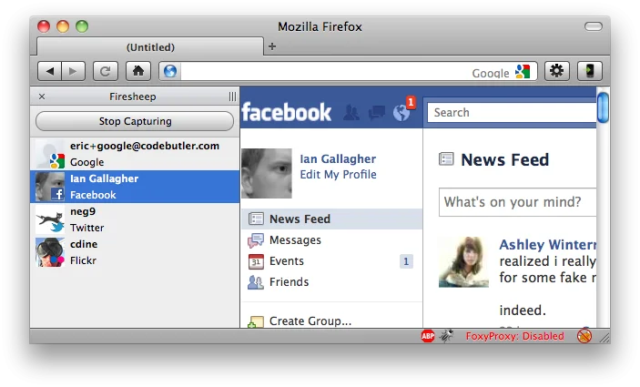

Web Security
Andreas Happe
Meta-Stuff
Der Vortragende: Andreas Happe
Andreas Happe: How To?
- per-Du, per-Sie?
- Erinnerung, falls ich zu leise werde
I think there should be more than one voice in a healthy society.
Li Wenliang 12.10.1986-7.2.2020
Education and Work
| Jahr | Was | Skills |
|---|---|---|
| 1996-2001 | HTL Villach | Für EDV und Organisation |
| 2001-2002 | Zivildienst | Access Programmieren.. |
| 2002-2009 | TU Wien | Software Engineering |
| 2008-2009 | BlackWhale | CTO, RoR |
| 2006-2018 | AIT | Software Engineering, C, Scala, Java, Kotlin |
| since 2013 | CoreTec | Pen-Tester Web/Android/Whatever |
| 2016? | Offensive Security | OSCP |
| since 2019 | FH/Technikum Wien | Lektor WebSec, SecOps (nicht mehr) |
| since 2020 | FH/Technikum Wien | Lektor WebAppSec |
| since 2021 | App-Sec Betreuung von Unternehmen |
Other Fun Security Stuff
| Jahr | Was | Skills |
|---|---|---|
| since 2017 | ÖNORM | A77.00 Sichere Webapplikationen |
| since 2019 | OWASP | Leader Vienna Chapter |
| 2018 | OWASP | Top Contributer MSTG |
| 2019 | NATO Locked Shields | Teamlead Linux + Teamlead Web |
| 2019 | We Are Developers | Sounding Board Security |
| 2020 | NIS-Richtlinie | Auditor Kritische Infrastruktur |
OWASP Top 10
OWASP Top 10 2017

OWASP top 10 2021

Ansatz
- starten mit high-level Problemen (Authentication/Authorization)
- danach low-level Probleme (Injections)
Identification / Authentication
Identification
- Benutzer “claims” seine Identität
- Verschiedene Möglichkeiten
- Benutzername und/oder Email
- SmartCards
- postIdent, videoIdent, bildIdent
- Häufig mit Authentication in einer Operation
Authentication
- Validierung der Benutzeridentität
- Verschiedene Methoden/Faktoren
- something-the-user-knows
- something-the-user-possesses
- something-the-user-is
- weird stuff: next-cloud video
Kombination mehrerer Faktoren
- Multi-Faktoren-Auth
- Unterschiedliche Faktoren kombinieren
- Beispiel: Bankomatkarte
- Bitte nicht mehr SMS verwenden
- SS7, Sniffer (Nokia 3210), etc.
- Alternative: Mobile-Application
Login-Dialog
Grundprinzip
Keep-it-simple-and-stupid


Login-Dialog: Don’t
- getrennte Benutzernamen- und passwort Masken
- Authentication through Email (u.a. long-term problems)
- HTTP BASIC basierte Authentication (cis..)
- Flash/Silverlight/Java-Applets
Angriff: User Enumeration
Angreifer kann Informationen über Vorhandensein eines Benutzers erraten
“Username nicht bekannt”
Im Login Form einfach: generische Fehlermeldungen verwenden
Problem:
- was bei User-Anlegen und Passwort-Vergessen Funktionen?
- Timing
Angriff: Brute-Force
- brutal einfach
- Online vs. Offline Brute-Force Angriff
- Passwortlisten vs. alle-Möglichkeiten-durchprobieren
- Tools: hydra, burp, etc.
Passwortlisten
- Gute Passwortlisten sind mittlerweile verfügbar
- Passwortlisten können auch mittels Webseiten generiert werden
- Passwortlisten werden mittels Deep Learning / AI generiert
Brute-Force Gegenmassnahmen
- Good Password Policy
- Rate-Limits
- (Temporary) User Sperre – DoS Problem
- Captchas
- Multi-Faktor Authentication
Logout-Funktion
- User sollte sich ausloggen können
- User sollte die Möglichkeit besitzen, alle Sessions zu beenden
Passwörter
SSO? Social Login?
Falls Passwörter gespeichert werden..
- niemals plain-text speichern (inkl. Logs, etc.)
- immer eine Key-Derivation Function verwenden (bcrypt, scrypt, pdkdf2)
- Key-Stretching verwenden
- immer in der Applikation hashen (nicht erst durch DB)
- Gilt auch für Passwort-ähnliche Daten
Evolution der Passwort-Hashes
- Nothing
- Hashes
- Salt+Hashes (and Pepper)
- Key-Derivation Functions
- Single-Sign On (?)
Passwort Cracking
- offline möglich
- automatisiertes Erkennen bei Offline-Cracking nicht möglich
Frage zur Performance
Hashcat mit einer Geforce GTX 3080
- bei MD5?
- bei bcrypt?
Passwort-Richtlinien
- NIST 800-63-3: Digital Identity Guidelines
- Zwischen 8..64 Zeichen
- Unterscheidung Zeichen und Byte!
- Remove periodic password change requirements
- Drop the algorithmic complexity song and dance
- Require screening of new passwords against lists of commonly used or compromised passwords
- No Password Hints
Screening: Haveibeenpwned.com
- Offline: Passwort-Liste (SHA1): ca. 10 Gigabyte
- Online:
- v1: Übermittlung von Hashes
- v2: k-Anonymity
Haveibeenpwned API v2
- hash = hash(pw)
- hash[0..5] wird zum Server geschickt
- Antwort: Passwort-Hashes die mit den fünf Buchstaben (des Hashes) beginnen und wie häufig das jeweilige Passwort vorgekommen ist
- Benutzer vergleicht nun ob sein hash in der Antwort vorkommt
- Der Service kennt allerdings den konkreten Hash (hoffentlich) nicht mehr
Passwort-Vergessen Funktion
- Keine Passwort-Fragen!
- Meistens per Link in einer Email
- Link sollte nur einmal und nur für den einen Account funktionieren
- Nicht:
- Alternate Transport: z. B. eingeschriebener Brief bei SVA
Passwort neu setzen
Benutzer will sein Passwort ändern
- User muss authenticated sein
- Passwort wird nur für den aktuellen User verändert
- Das alte Passwort muss im Zuge der gleichen Operation erfragt werden
Optionale Funktionen bei Passwort Änderung/Reset
- Notifications versenden
- Notifications out-of-band versenden
- Alle Sessions des aktuellen Benutzers beenden
Session Management
- Recap: Warum Sessions?
Gewünschter Session-Ablauf
- Während des Logins wird ein neues Session-Token/Cookie generiert
- Bei jedem Folge-Zugriff wird über dieses Token an den Server übertragen
- (Die Benutzeridentität wird geprüft)
- Beim Logout wird das Token im Browser gelöscht und am Server als inaktiv vermerkt
- Logout aller Sessions sollte möglich sein
Client vs. Server-Side Session
- unterschiedlichen Arten Sessions zu bilden
Client-Seitig
- Direktes Speichern der Daten im Cookie
- Integrität und Confidentiality muss durch Applikation sichergestellt werden
- Serverseitiges Invalidieren von Sessions schwer möglich
Server-Seitig
- server-seitig: Random Key (Session ID) im Cookie
- Server-Datenbank über die der Random-Key einem Benutzer zugeordnet wird
- Möglichkeit der Session-Invalidation
- Keine sensiblen Daten innerhalb der Client-Cookies
Session-Technologien
Cookie-based Sessions
- Cookie wird durch den Server gesetzt
- Cookie wird bei jedem Request automatisch durch den Browser mit übertragen
- Möglichkeit des Session-Timeouts und optionale Security-Flags
Cookie-Beispiele
Set-Cookie: sessionid1=0xbadc0ffee;
Set-Cookie: sessionid2=0xbadc0ffee;Max-Age=42;
Set-Cookie: sessionid3=0xbadc0ffee;Secure;HttpOnly;SameSite=Lax
Set-Cookie: sessionid4=0xbadc0ffee;Path=/
Set-Cookie: sessionid5=0xbadc0ffee;Domain=snikt.netClient-Side: Tokens
- Server überträgt signiertes Token an Client
- Analog zu Kerberos
- Das Token enthält Zugriffsberechtigungen und wird (hoffentlich) signiert
- Häufig verwendet: JSON Web Token
- Gut für Clients, suboptimal für interaktive Browser-Sessions
Json Web Tokens (JWTs)
- Token Format, RFC 7519
- Dienen zur Übertragung von Permissions
- Übertragung per
- HTTP Parameter: please don’t
- Cookie: sameSite, httpOnly, Secure-Flags setzen
- HTTP Header als bearer token
Grundaufbau

Grundaufbau

Probleme bei JWTss
- Header nicht Integritätsgesichert
- Beispiel: NULL alg
- Beispiel: HS vs RS confusion
- offline-cracking
- Confidenciality
JWT: für Sessions?

Probleme bei Sessions
Problem: Session-ID wird verloren
- Verwendung von unverschlüsselten HTTP

Wie kann HTTPS erzwungen werden
- Cookie mit Secure-Flag: Cookie wird nur mittels HTTPS übertragen
- HSTS: Browser macht ein upgrade auf HTTPS bei Folgezugriffen
- CSP: Browser macht ein upgrade auf HTTPS bei Folgezugriffen
Beispiele eines HTTP Response mit gesetzten Header:
Strict-Transport-Security: max-age=31536000; includeSubDomains
Set-Cookie: CookieName=Wert; path=/; secureWarum ist ein automatic redirect zu HTTPS nicht ausreichend?
Problem: Mixed-Content
- Cookie Drive-By, um 2010/2011 herum
- nur Login wird mit HTTPS geschützt
- Rest der Seite mittels HTTP
Tool: Firesheep
Mixed-Content: Current Situation
- Mittlerweile: active mixed-content wird by default geblockt
- Chrome will Download von “gefährlichen” Inhalten mittels HTTP unterbinden
Problem: Session-ID vorher-bestimmbar
- Angreifer darf Session-ID nicht erraten können
- Schlechte Ideen:
- aufsteigende Zahlen
- MD5 auf die Systemzeit
- Immer einen guten Zufallszahlengenerator verwenden
- Entropie-Check der Session-Id
Problem: XSS
- Annahme: die Webapplikation hat eine XSS-Lücke

Beispiel XSS Extraction
Lösung für XSS-Lücke
- keine XSS Lücken implementieren
- httpOnly-Flag bei Session Cookies setzen
- CSP verwenden
Set-Cookie: CookieName=Wert; path=/; HttpOnlyProblem: Session-ID als GET-Parameter
- wird dadurch in Proxies, Caches, etc. gespeichert
- auch in Browser Historie
- Vermeiden durch Verwendung eines Session-Cookies
- Work-Around: Verwendung von POST Requests
Problem: Session-Fixation
- Nicht Vorbestimmen der Session, sondern Erzwingen einer Session-ID
- Operation mit Session als HTTP GET Parameter
- Social Engineering
Angriff inkl. Social Engineering

- Lösung: Session-ID während Login neu generieren
- Hint: Session bei Logout löschen ist optional
“Abgeschwächte” Variante
- ohne HTTP GET Parameter mit Session-Id
- Session-Id wird bei Login/Logout nicht gelöscht
Authentication & Authorization
Basic Idea
- Überprüfung der Benutzerberechtigung
- Zugriffskontrolle = Authentication + Authorization
Simple Facts
- muss vor der Operation ausgeführt werden
- muss immer serverseitig implementiert werden
- zum Zeitpunkt des Zugriffs
Authentication / Authorization
Fehlende Authentication ist problematischer als fehlende Authorization.
Problem: Fehlende serverseitige Überprüfung
Grundproblem
- Zugriffsrechte werden nur am Client überprüft
- es wird davon ausgegangen, dass die dahinterliegenden Server-Operationen nicht auffindbar sind (Security by Obscurity)
Beispiel: Rich-Client Apps im Browser
- häufig: Java Applets, Flash, Silverlight

Forceful Browsing
- Abhängig von der Userrolle werden unterschiedliche Bereiche angezeigt
- Operationen im Hintergrund überprüfen keine Authorization
- Beispiel: Direktzugriff auf /admin
Beispiel: Direct-Object References
- links mit erratbaren Ids ohne Zugriffscheck
- z.B. /invoice/420 oder /user/1
- Aktuelles Bespiel: Corona Schnelltests
Also immer Authentication und Authorization testen!
Scoping von Daten
Innerhalb der Applikation läuft die Applikationslogik immer im Auftrag eines Benutzers
Die bearbeitenden Daten sollten so früh wie möglich auf den aktuellen Benutzer gebunden werden
Gegenbeispiel: Usability
- ÖBB Tickets
- Download des Tickets ohne Authentication
- Ticket-Id/Download-Id ist zufällig gewählt
Scoping von Daten
GET /invoices/42Negativ:
Positiv:
Problem: Fehlende Konsistenz
Nicht-homogene Applikationen
- Authentication/Authorization ist häufig Teil des verwendeten Frameworks
- Problem bei gewachsenen Applikationen:
- mehrere Programmiersprachen/Frameworks, teilweise auch Portale
- Brennpunkt: Plattformübergreifende Integration der Authentication
- Hint: Session wird häufig als GET-Parameter übergeben
Selbst-geschriebene Komponenten
- Applikation verwendet ein Framework, aber einzelne Komponenten wurden selbst geschrieben
- Betrifft häufig nachträgliche Erweiterungen
- Problem: Bei den selbst-geschriebenen Komponenten wird gerne die Authentication vergessen
Beispiele:
Beispiel: Aktiendepot einer Bank
/piechart?user=usernameBeispiel: Dokumenten-Export
/documents/download/1
/documents/1.pdfProblem: Welche Felder werden überprüft?
Beispiel: Update Operation
POST /user/42/update HTTP 1/1
{ “id”: “42”, “name”: “happe”}Beispiel: Potentielle Probleme
- Zugriff auf /user/1/update?
- Austausch von ID im Datensatz?
- HTTP GET oder PATCH statt POST?
- Zusätzliches Feld “admin”: “1” im Datensatz?
Problem: Mass Assignments
Mass-Assignment als Automatisierung
Parameter werden automatisch zugeordnet
Request:
POST /user/1/update HTTP/1.1
user[name]=happe&user[email]=ah@mybloodtypeis.coffeeSource Code:
Probleme bei Mass Assignments
Angreifer:
user[id]=1&user[name]=happe&user[role]=adminMass Assignments: Lösung
Lösung: dezidiert zum Update erlaubte Felder definieren
Problem: CSRF-Angriffe
CSRF-Angriffe
- Nutzen ein bestehendes Vertrauensverhältnis zwischen (Opfer) Web-Browser und einem Webserver aus
- Grundproblem: Browser verschickt automatisch Session-Cookies beim Zugriff auf entfernte Server
- Durch ein verstecktes Formular auf einer fremden Webseite wird eine Operation mit den Rechten des Opfers auf einer anderen Webseite ausgeführt
Flow

Gegenmaßname: Synchronizer Token
- Server setzt (zufälliges) Token bei jedem Formular und vergleicht ob dieses mit dem serverseitigen Token übereinstimmt
- Token sollte regelmässig neu generiert werden
- Was passiert wenn kein CSRF-Token Feld mit übergeben wird?
Gegenmaßnahme: SameSite-Flag
- Same-Site Flag bei Cookies
- Strict: Cookie wird nie Cross-Site übertragen
- Lax: Nur Cross-Site wenn Navigation
- Default ab Chrome 80
Achtung: Site != Origin
- Site: eTld+1
- Origin: Schema + Domainname + Port
| Origin | Site | |
|---|---|---|
| https://a.snikt.net | https://a.snikt.net:443 | snikt.net |
| https://b.snikt.net | https://b.snikt.net:443 | snikt.net |
| https://a.tw.ac.at | https://a.tw.ac.at:443 | tw.ac.at |
| https://b.tw.ac.at | https://b.tw.ac.at:443 | tw.ac.at |
| a.github.io | https://a.github.io:443 | a.github.io |
Problem: Authorization in Alternate Channels
Grundproblem
Die Zugriffsrechte müssen zwischen diesen gesamten Schnittstellen abgeglichen werden.
Beispiel:
- eine Webseite
- als WebServices für mobile Clients
- eine REST-API
- WebSocket-Schnittstelle
Injection Attacks
Grundproblem
- Garbage In/Garbage Out
- Never trust user (input)
- Switch von Daten-Context auf Befehls-Context
- Ausführung am Web-, App- oder Datenbank-Server
- mit (hoffentlich) den entsprechenden Rechten
Wie zu testen?
- Gut automatisiert testbar
- Web Application Security Scanner
- Tools für Spezialbereiche wie SQLi
Gegenmassnahmen
- Überprüfung aller Eingaben
- immer mit Bibliotheken da zu viele Möglichkeiten
- Quoting der Ausgaben/bei der Verwendung
- teilweise automatisch durch Frameworks
- Minimize Impact
- Sandboxes
- CSP
Problem: Große Angriffsfläche
Command Injections
Allgemein
- Webapplikation mit dynamischer Web-Operation
- diese wird über ein Systemkommando breitgestellt
- Angreifer versucht das Kommando zu “überladen”..
- .. und kann dadurch “eigene” Kommandos ausführen
- use-case: mit netcat eine Session/Listener aufmachen
Beispiel: Router mit Ping
http://192.168.1.1/test_connectivity?domain=snikt.net
# Versuche mit:
;ls
$(ls)
`ls`
# Ergebnis:
ping www.snikt.net;lsBeispiel: TP-Link Router
Gefährliche Funktionen
- Java
- Runtime.exec(), getRuntime.exec(), ProcessBuilder.start()
- PHP
- system, shell_exec, exec, proc_open, eval, passthru, proc_open, expect_open, ssh2_exec, popen
- Python
- exec, eval, os.system, os.popen, subprocess.popen, subprocess.call
Gegenmassnahme
- Bibliotheken statt Kommandozeilenaufrufe verwenden
- z.B. Netzwerkbibliotheken statt ping aufrufen
SQL-Injections
Grundproblem (OWASP)
SQL injection errors occur when:
* Data enters a program from an untrusted source.
* The data used to dynamically construct a SQL querySQL: very basics
SQL: UNION select
SQL Injection Attacks
Simples Beispiel
- Kino-Portal:
- Login: https://kino.local/login.php?username=ah&password=pw
Hintergrund: SQL Operation wird mit String Concat gebaut
Simples Beispiel
Angreifer wählt Passwort:
1’ or ‘1’=’1Ergebnis:
Stacked Queries
Union-Based SQLi
- Weboberfläche
- https://snikt.net/addressbook_search?user_id=1
- Ergebnis wird in einer Tabelle angezeigt
# Datenquelle:
select Name, Phone, Address FROM users where user_id=1Union-Based-SQL Kommando
- Folgende Eingabe fuer id:
1 UNION ALL SELECT creditCardNumber,1,1 FROM CreditCardTable- Spaltenanzahl erraten
Union-Based SQLi: Ergebnis:
Error-based SQLi
Eine Datenbank-Fehlermeldung wird als Rückkanal verwendet
Beispiel: Boolean-based blind SQLi
- URL: http://snikt.net/show_user?id=1
- Annahmen:
- Query: select * from users where id = 1;
- id besitzt Injection-Lücke
- Aber kein Ausgabekanal in der Seite
Code kann angehängt werden..
Beispiel: Auslesen der ersten Stelle eines Benutzernamens
Bespiel: time-based blind SQLi
- Kein Antwortkanal verfügbar
- Eigentlich ein Side-Channel Attack über Timing
- Operation: http://www.example.com/product.php?id=10
Tooling: SQLMap
- Full support for MySQL, Oracle, PostgreSQL, Microsoft SQL Server, Microsoft Access, IBM DB2, SQLite, Firebird, Sybase, SAP MaxDB, Informix, HSQLDB and H2 database management systems.
- Full support for five SQL injection techniques: boolean-based blind, time-based blind, error-based, UNION query-based and stacked queries.
Problem: Database-Escape
- MySQL, PostgreSQL und MSSQL erlauben es, Kommandos ausgehend von SQL auszuführen
- z.B. xp_cmdshell bei MSSQL
Postgresql (user muss db admin sein)
Gegenmaßnahmen
Gegenmaßnahme: Prepared Statement
Gegenmaßnahme: Prepared Statements
Gegenmaßnahme: prepared statements
- Achtung: einige Felder können nicht mittels Prepared Statements abgebildet werden:
- Tabellennamen
- Spaltennamen
- ASC/DESC
- In dem Fall: Whitelisting oder Query umbauen
Gegenmaßnahme: prepared statements
- Vorteil von prepared statements: Logik bleibt in der Applikation
Gegenmaßnahme: Escape Input Data
- Last-Resort
- Error-Prone
- Datenbank-spezifisch
Stored Procedures?
- Können sicher sein, weil stored procedures meistens prepared statements verwenden
- Es gibt aber auch die Möglichkeit eines evals, deswegen muss man den stored procedure code ebenso testen
ORMs sind automatisch sicher?
Am Beispiel sqlize
NoSQL? MongoDB
NoSQL: Attack pattern
XML External Entities
Grundproblem
- XML Dateien müssen serverseitig bearbeitet werden
- XML Parser sind komplex
- Es können Remote Ressourcen eingebunden werden
Beispiel: reading files
Beispiel: reading Shares
Es werden die Token des Serverbenutzers verwendet.
Beispiel: reading URLs
Beispiel: reading URLs
Beispiel: reading URLs
If lucky: PHP Expect Module
Gegenmaßnahmen
- JSON/CSV sind keine “wirklichen” Alternativen
- Im Parser External Entities deaktivieren
- Wissen, wie der Parser funktioniert..
Million Laughter Attacks
- DoS-Angriff gegenüber dem Speicher (RAM)
- Meistens über “explodierende” Strukturen
- XML Security Cheat Sheet
File Uploads
Umfeld
- Benutzer kann Dateien hochladen
- Benutzer kann Dateien wieder herunterladen bzw. auf Dateien zugreifen
- (Dateien werden server-seitig gelesen)
Das Upload-Verzeichnis
- in diesem Verzeichnis werden Dateien abgelegt
| Server-Pfad | URL |
|---|---|
| /var/www | http://snikt.net/ |
| /var/www/index.html | http://snikt.net/index.html |
| /var/www/upload | http://snikt.net/upload |
| /var/www/upload/1.jpg | http://snikt.net/upload/1.jpg |
| /var/www/upload/1.html | http://snikt.net/upload/1.html |
| /var/www/upload/1.php | http://snikt.net/upload/1.php |
Minimale Absicherungen
- Dateitypen begrenzen (keine HTML-Files, etc.)
- Niemals Dateinamen durch User bestimmen lassen
- Kein Overwrite von Dateien erlauben
Bessere Lösung
- Downloads von Applikation trennen
- Download-Verzeichnis ausserhalb des Webroots
- oder BLOBs in der Datenbank
- Eigene Download-Operation
- Mit Random-Id
- Mit Authentication/Authorization
- z.B. download.php?id=123
Upload von HTML Files
- Wenn ein HTML-File hochgeladen und danach betrachtet wird
- inkludierter JavaScript Code ist same-origin
- Zugriff auf Cookies, etc.
Content-Disposition: attachment
X-Content-Type-Options: nosniffUpload von indirekt malicious files
- Backdoors, z. B. als PDF Dateien
- Integration von Virenscanner?
Path Traversals
Path Traversals: Grundsituation
- Annahme Operation: /var/www/GetImage.jsp
- https://opfer.local/GetImage.jsp?file=diagram.jpg
- Zugriff auf Datei /var/www/diagram.jpg
Trying to get out of WebRoot
Parameter: ./../../../../etc/passwd
/var/www/./../../../../etc/passwd
-> /etc/passwdPath Traversals: Gegenmaßnahmen
- Nicht benutzer-übergebene Dateinamen beim Zugriff verwenden
- immer den kanonischen Pfad berechnen und gegen eine whitelist testen
- Einsatz von Sandboxes und Chroots
Client-Side Attacks
Angriffe gegen den Browser
- häufig als Teil von Social Engingeering
- Water-Hole Attacks
Gegenmassnahme: HTTP-Header
- Server teilen dem Browser erwartetes Verhalten mit
- HTTP-Header wie Cookie-Header oder HSTS
- teilweise HTML-Directives
- Immer Browser-Versions abhängig, siehe auch caniuse
Javascript-Injectons (XSS)
Grundproblem
- Angreifer findet einen Weg um Javascript innerhalb der Webseite zu platzieren
- Angriff wird im Browser des Opfers durchgeführt, wenn dieser die Webseite betrachtet
- Drei grobe Arten: reflected, persistend, DOM-based XSS
Reflected XSS

- Javascript wird vom Webserver zurückreflektiert
- non-persistent
- meistens ist eine soziale Komponente notwendig
- http://opfer.xyz/operation?parameter=alert(1);
Stored/Persistent XSS
Javascript wird am Server gespeichert
Z.b. folgendes als Chat-Nachricht:
DOM-based XSS
- DOM-based
- Durch Modifikation/Injecten des Schadcodes im DOM
- Server ist nicht direkt involviert
Beispiel
http://www.some.site/page.html?default=French
<select><script>
document.write("<OPTION value=1>"+document.location.href.substring(document.location.href.indexOf("default=")+8)+"</OPTION>");
document.write("<OPTION value=2>English</OPTION>");
</script></select>http://www.some.site/page.html?default=<script>alert(document.cookie)</script>DOM-based: warum interessant?
- Documentation am Server?
- http://snikt.net/app/libs/jquery/docs/search.html
uXSS
Angriffe gegen den Browser..
mXSS
Browser modifizieren übertragenen Code und “erzeugen” auf diese Weise XSS-verseuchte Webseiten
- z.B. bei Verwendung von X-XSS-Protection
XSS kann an vielen Stellen auftreten
<script>alert(1);</script>
<SCRIPT SRC=http://xss.rocks/xss.js></SCRIPT>
<IMG SRC=JaVaScRiPt:alert('XSS')>
<IMG SRC=`javascript:alert("RSnake says, 'XSS'")`>
<IMG SRC=javascript:alert(String.fromCharCode(88,83,83))>
<IMG SRC= onmouseover="alert('xxs')">
<IMG SRC="non-existant" onerror="alert('xxs')">
<IMG SRC="jav ascript:alert('XSS');">
<BGSOUND SRC="javascript:alert('XSS');">
<IMG STYLE="xss:expr/*XSS*/ession(alert('XSS'))">Payloads
- Session Stealing
- Virtual Defacement
- Crypto-Mining
- DDoS-Angriffe
- Further Social Engineering
Gegenmaßnahme: Input Filtering/Sanitation
- werden Daten eingegeben, müssen diese auf Schadmuster hin überprüft werden
- Ist nur sinnvoll mit gemaintainten Bibliotheken durchführbar
- Hardening: Web Application Firewalls (Problem: False-Positives)
Gegenmaßnahme: Quoting
- werden user-generierte Daten ausgegeben, müssen diese encoded werden
- “nicht so einfach..”: verschiedene scopes
- XSS Prevention Cheat Sheet
Quoting kann komplex werden
- Context ist wichtig, folgendes Code-Fragment am Server
- taintedVar muss sowohl js- als auch html-encoded sein
Gegenmassnahme Quoting
- HTML-Renderer vermeiden
- element.write
- element.writeln
- innerHTML
- outerHTML
- Bei gewissen Funktionen double-quoting verwenden
- Achtung bei on* Handlern und Quoting
- Weiterführende Hints
Hardening: X-XSS-Protection
- Aktiviert die XSS Protection des Browsers
- Sollte vor Reflected-XSS schützen
- Werte:
- 0: disabled
- 1: enabled, input wird sanitized
- 1; mode=block: enabled, die page wird nicht gerendert
- Anti-XSS Heuristic wird nur noch von IE unterstützt..
Hardening: Content Security Policy
- war primär als XSS Schutz gedacht
- script-src Direktiven
- kommen gleich..
Zusammenspiel der Absicherungen

Reverse Tab-Nabbing
GrundIdee
Wird ein externer Link in einem neuen Browserfenster/tab aufgemacht, kann die aufgemachte Seite die Location der aufmachenden Seite ändern.
Aufmachende Seite
Angriff: aufgemachte Seite
Gegenmaßnahmen
- keine externen Webseiten verlinken
- rel=”noopener noreferrer” bei Link verwenden
<a href="bad-website.com" rel="noopener noreferrer" target="_blank">Vulnerable target using html link to open the new page</a>
</html>- Referrer-Policy setzen (no-referrer)
Referrer-Policy
- Kontrolliert den Referer-Header des Browsers
- Referer vs Referrer
Mögliche Einstellungen
| Wert | Beschreibung |
|---|---|
| no-referrer | Referer Header wird nie gesetzt |
| no-referrer-when-downgrade | default, no https->http |
| origin | nur origin wird gesendet |
| origin-when-cross-origin | |
| same-origin | referrer nur wenn same-origin |
| strict-origin | only set origin, no https->http |
| strict-origin-when-cross-origin | new-default (2021) |
| unsafe-url | Referrer immer gesetzt |
Clickjacking / X-Frame-Options
Angriff

X-Frame-Options
X-Frame-Options: deny
X-Frame-Options: sameorigin
X-Frame-Options: allow-from https://example.com/X-Frame-Options: Nachteile
- Header nur einmal erlaubt
- mit allow-from kann nur eine Origin angegeben werden
- Double-Framing ist möglich
- Alternative: CSP
Cookie-Flags
Allgemein
- werden beim Setzen des Cookies angegeben
- Setzen passiert per HTTP-Header
Set-Cookie: <cookie-name>=<cookie-value>Secure-Flag
- Verwendung des Cookies nur via HTTPS
Set-Cookie: <cookie-name>=<cookie-value>; SecureHttpOnly-Flag
- Zugriff mittels JavaScript wird unterbunden
- Achtung falls HTTP TRACE erlaubt ist
Set-Cookie: <cookie-name>=<cookie-value>; HttpOnlysameSite-Flag
- Kontrolle, wann ein Cookie übertragen wird
- Gegenmassnahme zu CSRF-Angriffen
CSRF-Angriffe

Möglichkeiten
- strict: nur bei same-site requestes
- lax (default): bei same-site requests, cross-site wenn navigation von externer Seite
- none: same-site und cross-site, secure muss gesetzt werden
Set-Cookie: <cookie-name>=<cookie-value>; SameSite=StrictSOP/CORS
Cross-Origin Resource Sharing (CORS)
Aufweichen der SOP
Beispiel: Browser lädt eine Webseite (web.snikt.net), diese will mittels Javascript auf service.snikt.net zugreifen
Simple Case: Read-Request
- Browser befindet sich auf web.snikt.net
- Will auf service.snikt.net zugreifen
- Setzt dafür den Origin Header beim JS-Zugriff auf service.snikt.net
Origin: web.snikt.netSimple Case: Response
Das Antwortdokument des Services beinhaltet einen zusätzlichen Header der anzeigt, wer diese Operation aufrufen darf:
Access-Control-Allow-Origin: https://web.snikt.net- Browser weiss nun, dass er diese Daten verarbeiten darf
- Da dies eine “safe” Operation ist, kann am service-Service nichts geschehen
- Bitte nicht: Access-Control-Allow-Origin: *
Was bei Daten-Verändernden Operationen?
- Preflight-Authorisation
- Browser sendet HTTP OPTIONS zum Service
- Origin-Header wird wieder auf web.snikt.net gesetzt
- Beispielsantwort
Access-Control-Allow-Origin: https://web.snikt.net
Access-Control-Allow-Methods: PUT, DELETE- Danach sendet der Browser erst den Daten-verändernden Request
Zusammengefasst

Content-Security-Policy (CSP)
Entstehungsgeschichte
- “logische” Erweiterung aus SOP
- SOP: Schützt die eigene Seite vor fremden Zugriffen
- CSP: Definiert wo in der eigenen Seite JavaScript vorkommen darf
Basic-Form
Content-Security-Policy: <policy-directive>; <policy-directive>Report-Only:
Content-Security-Policy-Report-Only: <policy-directive>; <policy-directive>Verhalten bei mehreren Headern
- nachfolgende Header können zuvorige nur verschärfen
Direktiven (Auszug)
- script-src, style-src, font-src, media-src, img-src, ..
- frame-src, frame-ancestors
- form-action
- base-uri
- upgrade-insecure-requests, block-all-mixed-content
- report-uri
- default-src
Sources (Werte für Direktiven)
- ‘none’
- ‘self’
- ‘unsafe-inline’, ‘unsafe-eval’, ‘strict-dynamic’
- scheme (http:, https:)
- hostname (e.g., https://snikt.net)
Beispiele
# resourcen nür über https
Content-Security-Policy: default-src https:
# Javascript darf nur in getrennten JS-Files am eigenen Server vorkommen:
Content-Security-Policy: script-src 'self';
# limit fonts und grafiken
Content-Security-Policy: font-src https://google-fonts.com; img-src 'self' https://img.snikt.net;XSS-Protection
# limit javascript to scripts from scripts.snikt.net
Content-Security-Policy: script-src https://scripts.snikt.net;Auch wenn der Angreifer im HTML-Code Javascript hinterlegen kann, wird es nicht ausgeführt:
Verwendung von Javascript
Funktioniert nicht mehr:
Verwendung von Javascript
Stattdessen: in eigenem Javascript-File:
somescript.js:
Problem: User sollte nicht JS-File hochladen können
- File-Uploads?
- Bypassing CSP using polyglot files
Negative Shortcuts
‘unsafe-inline’ und ‘unsafe-eval’ entfernen viel von der Schutzwirkung..
Content-Security-Policy: script-src 'self' 'unsafe-inline' 'unsafe-eval';CSP is hard
Restricting The Scripts, You’re To Blame, You Give CSP a Bad name
Reporting 1/2
Content-Security-Policy-Report-Only: default-src 'none'; style-src cdn.example.com; report-uri: /csp-reportsReporting 2/2
{
"csp-report": {
"document-uri": "http://example.com/signup.html",
"referrer": "",
"blocked-uri": "http://example.com/css/style.css",
"violated-directive": "style-src cdn.example.com",
"original-policy": "default-src 'none'; style-src cdn.example.com; report-uri /_/csp-reports",
"disposition": "report"
}
}CSP with Google: Nonces (since 2015)
Nonce: zufälliger nicht-erratenbarer Wert, wird per CSP definiert
Content-Security-Policy: script-src 'nonce-r@nd0m';Script-Tags werden ausgeführt, wenn sie den korrekten Nonce verwenden:
CSP-with-Google
Content-Security-Policy: default-src https:; script-src 'nonce-{random}'; object-src 'none'This policy will require all resources to be loaded over HTTPS, allow only script elements with the correct nonce attribute, and prevent loading any plugins.
CSP-with-Google: strict-CSP
Content-Security-Policy:
object-src 'none';
script-src 'nonce-{random}' 'unsafe-inline' 'strict-dynamic' https: http:;- unsafe-inline wird von neueren Browsern deaktiviert, falls nonce gesetzt
- strict-dynamic erlaubt das indirekte Laden von javascript, disabled http: und https:
- ganz alte browser fallen also auf http: und https: zurück
CSP-Scanner
- Viele Scanner analysieren bereits CSP Direktiven
- CSPScanner
- Google CSP Evaluator
- CSP Generator
HTML-Directives
IFrame-Option: sandbox
- all forms and scripts are disabled
- all links are not allowed to target other browser contexts
- all plugins are disabled
- all features that trigger automatically are disabled
Subresource Integrity
- Dient um indirekte Angriffe z. B. über CDNs abzuwehren
- Hash-Summe wird bei script/css includes angegeben,
- Verwendung kann mittels CSP enforced werden
SRI: Probleme
- nicht transitiv
- dynamische Inhalte wie Google Fonts
- keine “gratis” Updates von Libraries
HTML5 Stuff
WebStorage
- SessionStorage vs. LocalStorage
- Verwundbar gegenüber XSS (verglichen mit Cookies)
- no-na-net
- es gibt kein httpOnly
- man kann es nicht auf sub-Pfade limitieren
- niemals sensitive Informationen speichern
WebWorkers
- Achtung wenn User-Eingaben verwendet werden
- können XMLHttpRequests abschicken, aber getrennter Origin
- CPU DoS!
WebAsm
- Potential für Bitcoin-Miners
- Potential für Obfuscation
WebRTC
- Peer-to-Peer Communication
- Access to Camera/Mic through Browser Controls
- Eher Privacy Impact
WebBluetooth
- Browser soll mit verbundenen Bluetooth LE devices Daten austauschen können.
- Webseite kann nicht nach devices suchen
- JS requested device, Browser übernimmt das Pairing
- Effektiv sehr vergleichbar mit Security Model mobiler Applikationen
WebBluetooh: Privacy Impact
- Only possible from Secure Context (HTTPS)
- Eher Privacy Impact
- “rssi”, “txPower”
WebSerial und WebUSB
- why o why?
HTTPS/TLS
HTTPS/TLS: Guidelines
- TLSv1.2 (oder TLSv1.3) mit AES-GCM
- RFC8996
- Ältere Verfahren verwenden unsichere Krypto
- aktuelle Browser bieten nur TLSv1.2 an
- Vorzugsweise HTTP/2
HTTPS-Details
- HSTS verwenden
- Perfect Forward Secrecy anbieten
- Alle Kommunikationswege müssen ident abgesichert sein
- Problem: interne vs. externe Kommunikation
HSTS
- HTTP Strict Transport Security
- all future requests must use HTTPS
- automatic upgrade from HTTP to HTTPS
- user is prevented from accessing the site over HTTP
Strict-Transport-Security: max-age=31536000, includeSubdomain, preloadHTTP/TLS: Howto test
Misconfiguration / Minimalprinzip
Beispiel von Software, die man nicht am Server haben will:
- Entwicklungstools wie phpmyadmin
- Debug Mode/Toolbars bei verwendeten Frameworks
- Stacktraces mit Detailinformationen
- phpinfo.php
- Beispielscode (/example Directory)
Beispiel von Meta-Daten, die man nicht haben will:
- .git, .svn Verzeichnisse
- Backup files (.bak, .tmp)
- Private Schlüssel, etc. im Dateisystem
- Credentials im Dateisystem oder in Repositories
- Backups
Configuration and Credential Management
- nicht hard-coded
- Alternativen:
- .env Files
- Framework-Features
- Vault
Using Components with known Vulnerabilities
Components with Vulnerabilities
- Komponenten müssen regelmäßig getestet werden
- ..und dann auch ausgebessert
Wie kann dies automatisiert überprüft werden
Supply-Chain Attacks
- Typo-Squatting
- Dependency-Confusion
Logging / Monitoring
Basics
- Kontroverse bei OWASP Top 10 2017
- Es sollte möglich sein automatisierte Angriffe zu erkennen
- Spätere Auswertung sollte möglich sein
- Betrifft im Webserver Umfeld vor allem Webserver- und Applikationslogs
Anforderungen
- Zentralisiert (weil mehrere app server, db server, etc.)
- Secure (Integrität, Vertraulichkeit, Verfügbarkeit)
- Auswertbar